Grand Central of Private Capital
Carta’s citywide out-of-home campaign.
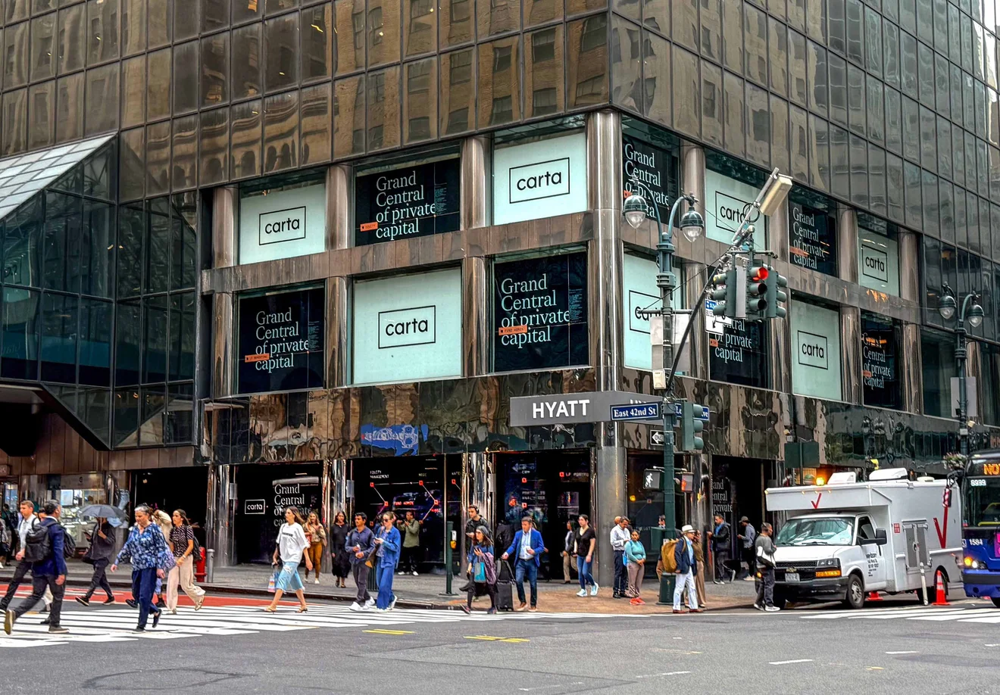
Art Direction
Brand Identity System
OOH Campaign Design
Employer
Carta
Year
2026
Credits
The Carta Brand Lab
Summer 2026 Brand Design Internship
Description
As art director and designer on Carta's in-house Brand Lab, I helped bring the brand's private-markets positioning to the street, translating Carta's fund administration platform into a citywide out-of-home campaign across five formats: a full station domination at Grand Central Terminal, an exterior storefront takeover, the Subway Liveboard digital network, in-office elevator screens, and a hand-painted wall in SoHo. Working alongside Carta's creative director, copywriter, motion designer, project manager, and brand strategist, I developed a visual system built to hold up at every scale, from a twenty-foot building wrap down to an elevator screen.
An Invisible Back Office
Fund administration is an abstract back-office platform, hard to picture from the street. Carta needed it to feel inevitable and omnipresent in the one neighborhood its customers actually walk through.
One System at Every Scale
A consistent language of navy and cream, a serif display headline paired with monospace data tags, and a single orange accent threading a recurring “node and line” motif that traces a fund's path, from PORTCO to FUND to FUND ADMIN.
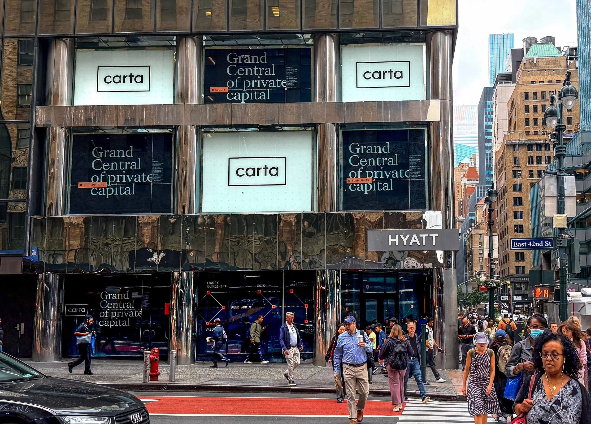
42ND ST & LEXINGTON AVE. STOREFRONT
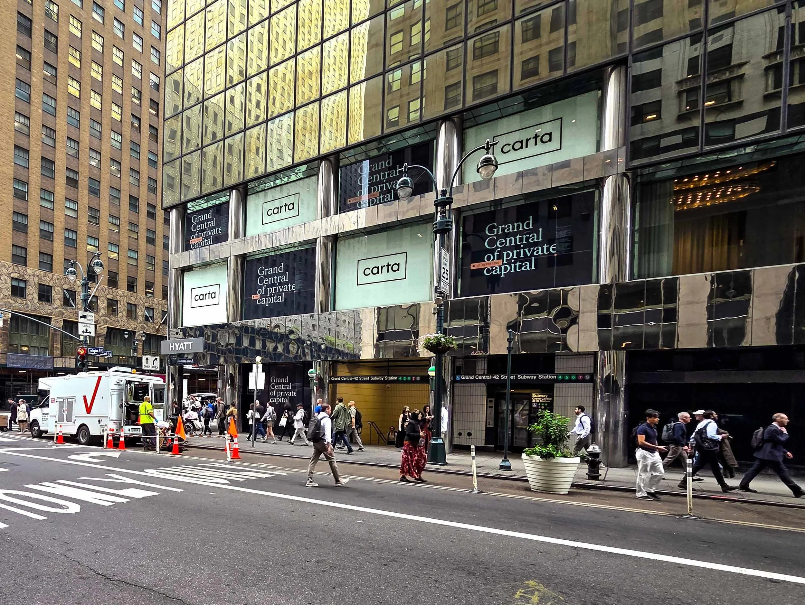
The station domination put Carta on platform walls and turnstile walls, right where fund managers walk.

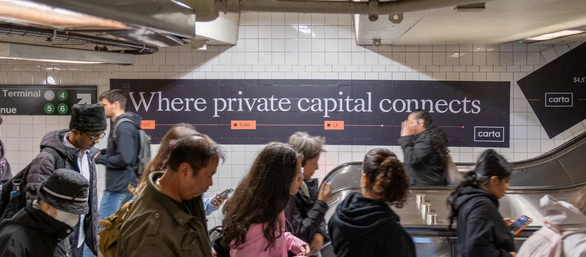
On the Subway Liveboard network, the same node and line moved onto digital screens across the city.
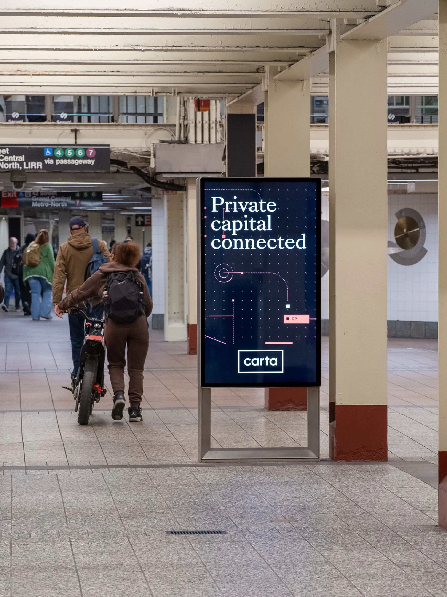
GRAND CENTRAL LOWER STATION DOMINATION
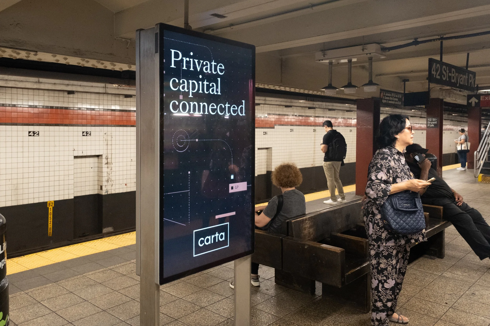
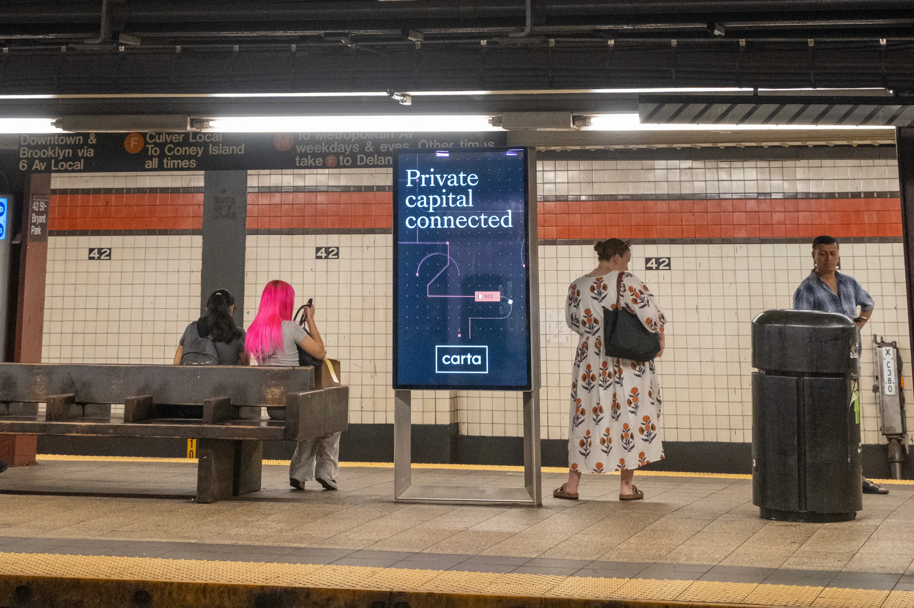
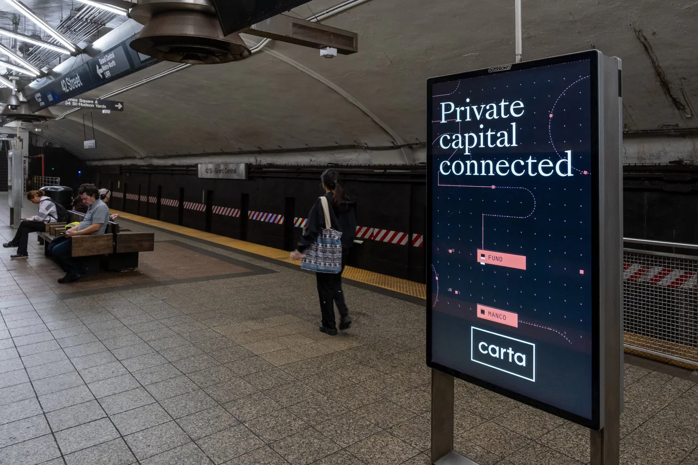
In SoHo, a hand-painted wall told the neighborhood to “Eat fund complexity for breakfast.”
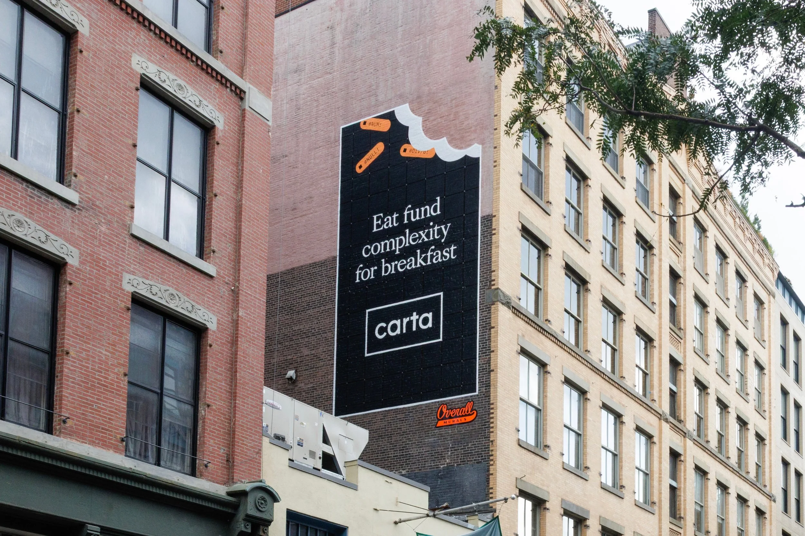
SOHO PAINTED WALL
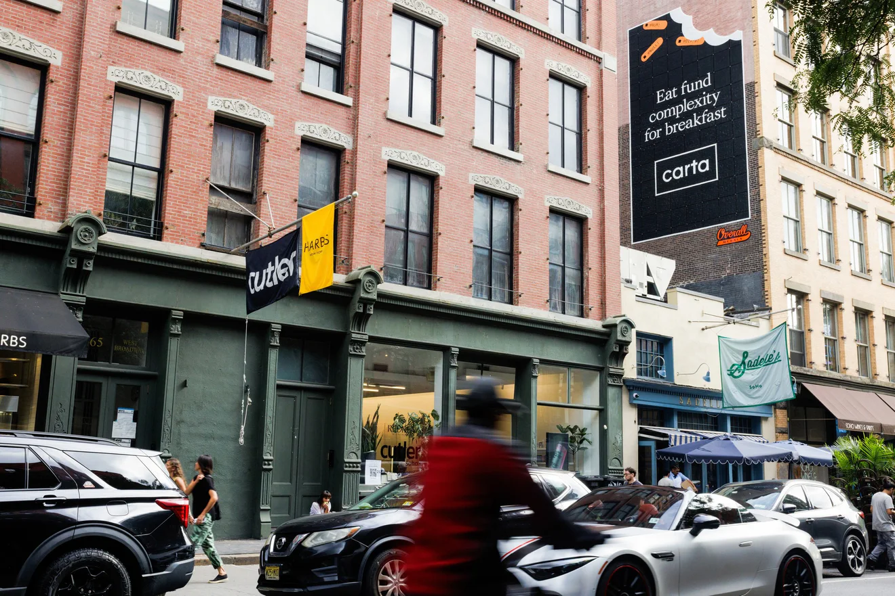
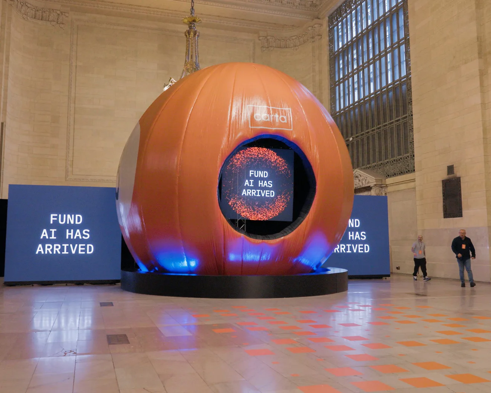
VANDERBILT HALL ACTIVATION